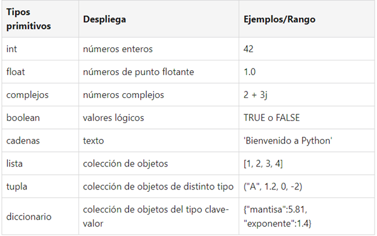

Una estructura de datos simples es aquella que se define sobre si misma es decir que no necesita de algún otro método para poder considerarse como estructura, ya que en el momento en que se combina con otros métodos se convierte en una estructura de datos compuesta. Por ejemplo, si se quisiera definir alguna persona las variables serian datos primitivos para poder en este caso guardar los datos que serían: nombre, apellido, Edad, etc.
Para seguir se pondrá como ejemplo una tabla con las estructuras de datos simples:

Moquer Company v0.1